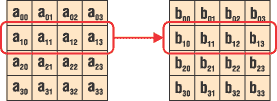
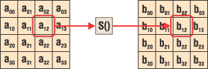
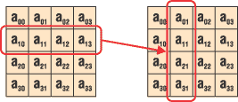
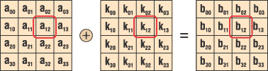
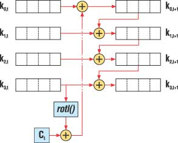
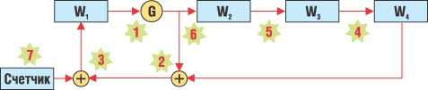
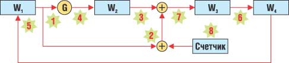
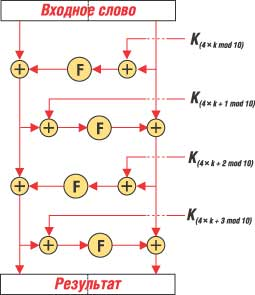
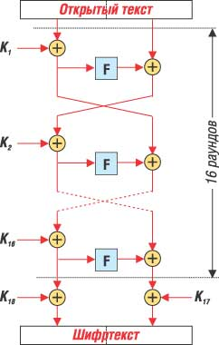
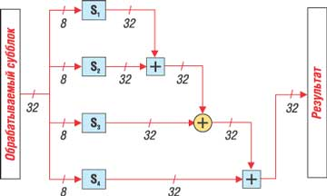

Наибольшую известность в мире среди алгоритмов шифрования получили алгоритмы, выступавшие в разное время как стандарты США: DES, Triple DES и AES. На самом деле алгоритмов шифрования достаточно много, они предназначены для различных применений и реализованы в разных средствах шифрования. И хотя ни один из них по количеству пользователей не может поспорить с тремя вышеназванными, некоторые из алгоритмов шифрования достойны подробного рассмотрения.
Алгоритм Square
Алгоритм Square интересен прежде всего по двум причинам. Во-первых, данный алгоритм разработан теми же специалистами, которые впоследствии создали алгоритм AES. Как известно, алгоритм, победивший в конкурсе по выбору нового стандарта шифрования США и получивший затем название AES, первоначально назывался Rijndael - по фамилиям его авторов: Винсента Риджмена (Vincent Rijmen) и Джоан Даймен (Joan Daemen) (см., например, "Современные алгоритмы шифрования", "BYTE/Россия" № 8'2003).
Мало того, именно структура алгоритма Square легла в основу алгоритма Rijndael. Структура алгоритма весьма нетрадиционна для современных алгоритмов симметричного шифрования данных - это справедливо как для 1997 г., когда был разработан алгоритм Square, так и для 2000-го, когда при подведении итогов конкурса AES эксперты отмечали, что "в основе алгоритма Rijndael лежит нетрадиционная парадигма, поэтому алгоритм может содержать скрытые уязвимости". Это не помешало Rijndael стать новым стандартом шифрования США, а та самая нетрадиционная структура сейчас называется "квадрат" (square) - по названию алгоритма, в котором она была впервые применена.
Кстати, в конкурсе AES участвовал и еще один алгоритм со Square-подобной структурой - алгоритм Crypton, разработанный совсем другими авторами.
Структура алгоритма
Алгоритм Square шифрует данные блоками по 128 бит, длина ключа также составляет 128 бит. 128-битный блок данных представляется в виде двухмерного байтового массива (таблицы) размером 4x4 - отсюда и название алгоритма. Текущее значение байтового массива в спецификации алгоритма называется состоянием (state). Над состоянием выполняется восемь раундов преобразований, каждый из которых состоит из следующих операций.
1. Линейное преобразование q, выполняющееся раздельно над каждой из строк таблицы (рис. 1):
q : bi,j = cjai,0 (+) cj-1ai,1 (+) cj-2ai,2 (+) cj-3ai,3,
где ai,j - текущее значение байта состояния, принадлежащего i-й строке и j-му столбцу; bi,j - новое значение байта состояния; cn - набор констант, определенных в спецификации алгоритма; (+) - логическая операция "исключающее или" (XOR); умножение выполняется по модулю 28.
|  | Рис. 1. Операция q алгоритма Square.
|
2. Нелинейное преобразование, представляющее собой табличную замену (рис. 2):
g : bi,j = S(ai,j).
|  | Рис. 2. Операция g алгоритма Square.
|
Замена реализуется в соответствии с табл. 1 (в ней указаны шестнадцатеричные значения), т. е. значение 0 заменяется на B1, 1 - на CE и т. д.
Таблица 1. Реализация замены для алгоритма Square
| B1 | CE | C3 | 95 | 5A | AD | E7 | 02 | 4D | 44 | FB | 91 | 0C | 87 | A1 | 50 |
| CB | 67 | 54 | DD | 46 | 8F | E1 | 4E | F0 | FD | FC | EB | F9 | C4 | 1A | 6E |
| 5E | F5 | CC | 8D | 1C | 56 | 43 | FE | 07 | 61 | F8 | 75 | 59 | FF | 03 | 22 |
| 8A | D1 | 13 | EE | 88 | 00 | 0E | 34 | 15 | 80 | 94 | E3 | ED | B5 | 53 | 23 |
| 4B | 47 | 17 | A7 | 90 | 35 | AB | D8 | B8 | DF | 4F | 57 | 9A | 92 | DB | 1B |
| 3C | C8 | 99 | 04 | 8E | E0 | D7 | 7D | 85 | BB | 40 | 2C | 3A | 45 | F1 | 42 |
| 65 | 20 | 41 | 18 | 72 | 25 | 93 | 70 | 36 | 05 | F2 | 0B | A3 | 79 | EC | 08 |
| 27 | 31 | 32 | B6 | 7C | B0 | 0A | 73 | 5B | 7B | B7 | 81 | D2 | 0D | 6A | 26 |
| 9E | 58 | 9C | 83 | 74 | B3 | AC | 30 | 7A | 69 | 77 | 0F | AE | 21 | DE | D0 |
| 2E | 97 | 10 | A4 | 98 | A8 | D4 | 68 | 2D | 62 | 29 | 6D | 16 | 49 | 76 | C7 |
| E8 | C1 | 96 | 37 | E5 | CA | F4 | E9 | 63 | 12 | C2 | A6 | 14 | BC | D3 | 28 |
| AF | 2F | E6 | 24 | 52 | C6 | A0 | 09 | BD | 8C | CF | 5D | 11 | 5F | 01 | C5 |
| 9F | 3D | A2 | 9B | C9 | 3B | BE | 51 | 19 | 1F | 3F | 5C | B2 | EF | 4A | CD |
| BF | BA | 6F | 64 | D9 | F3 | 3E | B4 | AA | DC | D5 | 06 | C0 | 7E | F6 | 66 |
| 6C | 84 | 71 | 38 | B9 | 1D | 7F | 9D | 48 | 8B | 2A | DA | A5 | 33 | 82 | 39 |
| D6 | 78 | 86 | FA | E4 | 2B | A9 | 1E | 89 | 60 | 6B | EA | 55 | 4C | F7 | E2 |
3. Байтовая перестановка p, простейшим образом преобразующая строку состояния в столбец (рис. 3):
p : bi,j = aj,i.
|  | Рис. 3. Операция p алгоритма Square.
|
4. Операция s, представляющая собой побитовое сложение состояния с ключом раунда (рис. 4):
s : b = a (+) Kt,
где a и b - значение всего массива состояния соответственно до и после преобразования, а Kt - ключ текущего раунда t (процедура формирования ключей раунда описана ниже).
|  | Рис. 4. Операция s алгоритма Square.
|
Помимо восьми раундов описанных преобразований, перед первым раундом выполняется "нулевой" раунд, состоящий из обратного линейного преобразования q-1 и наложения ключа нулевого раунда K0 операцией s.
Расшифрование данных выполняется аналогично зашифрованию, но с использованием обратных операций g-1 и q-1 вместо g и q. И наоборот, в нулевом раунде используется прямое преобразование q вместо обратного q-1. Операция g-1 представляет собой обратную замену, а q-1 предполагает использование вместо констант cn набора констант dn, приводящих к обратному результату и также определенных в спецификации алгоритма.
Процедура расширения ключа
Задача процедуры расширения ключа состоит в получении восьми 128-битных ключей раунда и ключа K0 из 128-битного ключа шифрования алгоритма. Расширение ключа выполняется следующим простым преобразованием:
Kt = y(Kt-1).
Операция y представляет собой набор функций, с помощью которых вычисляются ключи раунда (рис. 5):
k0,t+1 = k0,t (+) rotl(k3,t) (+) Ct,
k1,t+1 = k1,t (+) k0,t+1,
k2,t+1 = k2,t (+) k1,t+1,
k3,t+1 = k3,t (+) k2,t+1,
где kn,t - n-я строка (аналогично состоянию, ключ раунда представляется в виде байтовой таблицы 4x4) ключа t-го раунда Kt; Ct - набор итеративно вычисляемых констант, а rotl() - операция циклического сдвига байтовой строки на один байт влево.
|  | Рис. 5. Операция y алгоритма Square.
|
В качестве начального значения K0 используется исходный ключ шифрования алгоритма.
Криптостойкость
В спецификации алгоритма Square авторы привели строгое математическое обоснование операций алгоритма, которые выбирались исходя из требований высокой криптостойкости к линейному и дифференциальному криптоанализу (см. "Атаки на алгоритмы шифрования", "BYTE/Россия" № 11'2004). Кроме того, там же описаны возможные атаки на данный алгоритм, наиболее интересная из которых позволяет вскрыть шестираундовый вариант алгоритма путем выполнения 272 операций шифрования при наличии 232 блоков открытого текста и соответствующих им блоков шифртекста.
Все приведенные атаки позволяют вскрыть только "урезанные" (с уменьшенным числом раундов) варианты алгоритма Square. Авторы алгоритма не обнаружили никаких атак на полнораундовый алгоритм. Однако они предостерегают потенциальных пользователей Square от использования алгоритма, не прошедшего полного изучения специалистами на предмет отсутствия уязвимостей.
Наиболее подробное описание алгоритма Square, а также реализующие его исходные тексты программ можно найти на страничке Винсента Риджмена на сайте http://homes.esat.kuleuven.be/~rijmen/square/.
Алгоритм Skipjack
Алгоритм Skipjack также интересен по нескольким причинам. Он был разработан АНБ - Агентством национальной безопасности США (National Security Agency, NSA) для шифрования в специальных применениях. Фактически Skipjack представлял собой еще один стандарт шифрования США - созданный в 1987 г. и существовавший одновременно со стандартом DES.
Принципиальное различие между ними состоит в том, что DES - это открытый стандарт, алгоритм был опубликован и полностью открыт, что позволило всем заинтересованным специалистам оценить его стойкость. Можно сказать, что DES дал невиданный доселе толчок развитию криптоанализа (науки, посвященной поиску уязвимостей и соответственно взлому криптографических алгоритмов защиты информации). Вышли сотни трудов, посвященных различным методам криптоанализа именно в приложении к алгоритму DES, а также деталям самого алгоритма и их влиянию на криптостойкость DES. Можно утверждать, что именно благодаря DES появились целые направления криптоанализа. В отличие от DES, алгоритм Skipjack был долгое время засекречен, его описание стало доступно на сайте Национального института стандартов и технологий США (National Institute of Standards and Technology, NIST, http://csrc.nist.gov) только в 1998 г.
Один из известнейших специалистов в области криптографии Брюс Шнайер (Bruce Schneier) в книге "Прикладная криптография" утверждает, что алгоритм был секретным не для повышения его надежности, а для того, чтобы его нельзя было использовать в сторонних реализациях - подразумевалось, что Skipjack должен был использоваться только в аппаратных реализациях Clipper и Fortezza. Микросхема Clipper получила скандальную известность из-за того, что в ней реализован механизм депонирования ключей. Это означает, что любой ключ шифрования какого-либо пользователя (использующего реализацию Skipjack в микросхеме Clipper) может быть легко вскрыт правительственными чиновниками США, получившими соответствующий ордер. Аналогичный механизм существует и в криптоплате Fortezza. Настойчивое навязывание Clipper пользователям со стороны АНБ вызвало многочисленные протесты американских правозащитных организаций против использования данной системы. Следствием этого стало ограниченное распространение алгоритма Skipjack и его аппаратных реализаций.
Структура алгоритма
Skipjack шифрует данные блоками по 64 бита и использует 80-битный ключ шифрования. В процессе шифрования обработка данных выполняется по 16-битным словам, т. е. входной блок данных разбивается на четыре слова, обозначаемые w1, w2, w3 и w4. Выполняется 32 раунда преобразований, причем алгоритм предполагает два варианта функций раунда (функции A и B), и в каждом раунде выполняется только одна из них.
Функция A (рис. 6) выполняется следующим образом: ·
Шаг 1. Над словом w1 выполняется операция G, которая представляет собой зависящую от ключа перестановку (подробно описана ниже).
Шаг 2. Результат предыдущего шага складывается операцией XOR со значением слова w4.
Шаг 3. Результат предыдущего шага складывается операцией XOR с текущим значением счетчика (см. ниже), результат этой операции становится новым значением слова w1.
Шаг 4. Текущее значение w3 замещает старое значение w4.
Шаг 5. Текущее значение w2 замещает старое значение w3.
Шаг 6. Результат шага 1 становится новым значением w2.
Шаг 7. Значение счетчика увеличивается на 1.
|  | Рис. 6. Функция A алгоритма Skipjack.
|
Функция B представлена на рис. 7 и выполняется следующим образом:
Шаг 1. Над словом w1 выполняется операция G.
Шаг 2. Значение слова w1 складывается операцией XOR с текущим значением счетчика.
Шаг 3. Результат предыдущего шага складывается операцией XOR со значением слова w2.
Шаг 4. Результат шага 1 становится новым значением слова w2.
Шаг 5. Текущее значение w4 замещает старое значение w1.
Шаг 6. Текущее значение w3 замещает старое значение w4.
Шаг 7. Результат шага 3 становится новым значением слова w3.
Шаг 8. Значение счетчика увеличивается на 1.
|  | Рис. 7. Функция B алгоритма Skipjack.
|
В процессе зашифрования восемь раз выполняется функция A, затем восемь раз - функция B, затем эти 16 раундов повторяются:
P -> ( 8 * A ) ->( 8 * B ) ->( 8 * A ) ->( 8 * B ) ->C,
где P и C - соответственно открытый текст и результат его зашифрования. Перед выполнением данных 32 операций значение счетчика устанавливается равным 1.
Расшифрование проводится путем выполнения обратных операций в обратной последовательности. Перед расшифрованием значение счетчика устанавливается равным 32.
Операция G представляет собой четырехраундовую сеть Фейстеля (см. "Современные алгоритмы шифрования", "BYTE/Россия" № 8'2003), в которой в каждом раунде выполняются следующие операции (рис. 8):
Шаг 1. Обрабатываемый в текущем раунде байт входного слова (правый в нечетных раундах или левый - в четных) складывается операцией XOR с байтом ключа шифрования Ki, индекс которого определяется по формуле:
i = 4 * k + r mod 10,
где k - номер текущего раунда алгоритма, r - номер текущего раунда операции G.
|  | Рис. 8. Операция G алгоритма Skipjack.
|
Шаг 2. Результат предыдущего шага замещается согласно таблице замен F (табл. 2); старший нибл входного значения определяет номер строки (начиная с нуля), а младший нибл - номер столбца, на пересечении которых находится выходное значение.
Таблица 2. Таблица замен F
| A3 | D7 | 09 | 83 | F8 | 48 | F6 | F4 | B3 | 21 | 15 | 78 | 99 | B1 | AF | F9 |
| E7 | 2D | 4D | 8A | CE | 4C | CA | 2E | 52 | 95 | D9 | 1E | 4E | 38 | 44 | 28 |
| 0A | DF | 02 | A0 | 17 | F1 | 60 | 68 | 12 | B7 | 7A | C3 | E9 | FA | 3D | 53 |
| 96 | 84 | 6B | BA | F2 | 63 | 9A | 19 | 7C | AE | E5 | F5 | F7 | 16 | 6A | A2 |
| 39 | B6 | 7B | 0F | C1 | 93 | 81 | 1B | EE | B4 | 1A | EA | D0 | 91 | 2F | B8 |
| 55 | B9 | DA | 85 | 3F | 41 | BF | E0 | 5A | 58 | 80 | 5F | 66 | 0B | D8 | 90 |
| 35 | D5 | C0 | A7 | 33 | 06 | 65 | 69 | 45 | 00 | 94 | 56 | 6D | 98 | 9B | 76 |
| 97 | FC | B2 | C2 | B0 | FE | DB | 20 | E1 | EB | D6 | E4 | DD | 47 | 4A | 1D |
| 42 | ED | 9E | 6E | 49 | 3C | CD | 43 | 27 | D2 | 07 | D4 | DE | C7 | 67 | 18 |
| 89 | CB | 30 | 1F | 8D | C6 | 8F | AA | C8 | 74 | DC | C9 | 5D | 5C | 31 | A4 |
| 70 | 88 | 61 | 2C | 9F | 0D | 2B | 87 | 50 | 82 | 54 | 64 | 26 | 7D | 03 | 40 |
| 34 | 4B | 1C | 73 | D1 | C4 | FD | 3B | CC | FB | 7F | AB | E6 | 3E | 5B | A5 |
| AD | 04 | 23 | 9C | 14 | 51 | 22 | F0 | 29 | 79 | 71 | 7E | FF | 8C | 0E | E2 |
| 0C | EF | BC | 72 | 75 | 6F | 37 | A1 | EC | D3 | 8E | 62 | 8B | 86 | 10 | E8 |
| 08 | 77 | 11 | BE | 92 | 4F | 24 | C5 | 32 | 36 | 9D | CF | F3 | A6 | BB | AC |
| 5E | 6C | A9 | 13 | 57 | 25 | B5 | E3 | BD | A8 | 3A | 01 | 05 | 59 | 2A | 46 |
Шаг 3. Результат предыдущего шага накладывается операцией XOR на другой байт входного слова.
Процедура расширения ключа у данного алгоритма отсутствует - операция G использует байты исходного ключа шифрования по мере необходимости без их предварительной обработки. Однако в спецификации алгоритма Skipjack определен также протокол KEA (Key Exchange Algorithm) - протокол выработки общего симметричного ключа на основе секретного ключа отправителя информации и открытого ключа получателя. Данный протокол базируется на известном алгоритме вычисления общего ключа Диффи - Хеллмана. Очевидно, что 80-битный ключ шифрования может быть как вычислен с помощью алгоритма KEA, так и задан напрямую, что более принято для алгоритмов симметричного шифрования.
Криптостойкость алгоритма
Пока Skipjack был засекречен, у пользователей и специалистов возникало множество вопросов по поводу криптостойкости алгоритма: пусть в его реализациях присутствует механизм депонирования ключей, позволяющий уполномоченным лицам вычислить сессионный ключ, но сам-то секретный алгоритм достаточно ли надежен? Нет ли в нем каких-либо случайных или преднамеренно внедренных разработчиками уязвимостей?
По-видимому, стремясь пресечь слухи о возможных слабостях алгоритма, в 1993 г. АНБ передало спецификацию алгоритма и сопроводительную документацию к нему пяти известным экспертам в области криптологии для изучения алгоритма и опубликования отчета, который не должен был содержать описания внутренней реализации алгоритма, однако должен был дать понять заинтересованным лицам (не в последнюю очередь благодаря авторитету изучавших алгоритм экспертов), что криптографическая стойкость алгоритма Skipjack не вызывает сомнений.
Отчет экспертов появился в июле 1993 г. и содержал, в частности, следующие выводы:
- Благодаря 80-битному ключу алгоритма Skipjack (в сравнении с 56-битным ключом DES) крайне незначителен риск взлома алгоритма перебором всех возможных вариантов ключа (атака методом "грубой силы") в ближайшие 30-40 лет (с учетом предполагаемой скорости развития вычислительной техники).
- Отсутствует серьезный риск взлома алгоритма более эффективными криптоаналитическими методами, включая метод дифференциального криптоанализа.
- Криптостойкость алгоритма Skipjack не зависит от секретности самого алгоритма.
По поводу второго из приведенных выводов эксперты сделали оговорку, что за предоставленное им время серьезный анализ алгоритма провести невозможно, поэтому вывод базируется только на изучении ими критериев и процесса разработки и тестирования алгоритма, проведенных в АНБ.
Полномасштабный криптоанализ Skipjack начался уже после опубликования его спецификации в 1998 г. В том же году вышла работа ряда специалистов из Израиля, в которой, в частности, было отмечено свойство несимметричности ключа шифрования Skipjack, незначительно снижающее трудоемкость полного перебора ключей. В этой же работе было представлено несколько атак на усеченные версии алгоритма с неполным числом раундов и другими изменениями. Стоит отметить одну из опубликованных атак, действовавшую против варианта Skipjack, в котором не было всего трех операций XOR по сравнению со стандартной версией - в раундах 4, 16 и 17. Такая версия алгоритма получила название Skipjack-3XOR; интересно, что удаление всего трех операций XOR из 320 подобных операций приводит к полной слабости алгоритма - в этом случае ключ вскрывается при наличии 29 пар блоков открытого текста и шифртекста путем выполнения всего около 1 млн операций шифрования.
В том же году авторы предыдущей работы представили новый вид дифференциального криптоанализа, основанного на поиске ключа "от противного": если попытка расшифрования двух шифртекстов на каком-либо ключе приводит к такому соотношению между результатами их расшифрования, которое невозможно в принципе, то данный ключ неверен. Данная технология криптоанализа может быть полезна, в частности, для существенного сужения области полного перебора ключей. Однако атаке оказались подвержены только усеченные версии алгоритма.
Были и более поздние попытки криптоанализа алгоритма Skipjack, однако все они оказались неспособными взломать полноценную и полнораундовую версию алгоритма. При этом многие криптоаналитики высказывали мнение, что успешность атак на усеченные версии алгоритма говорит о его потенциальной слабости, что, впрочем, не доказано.
Алгоритм Blowfish
Алгоритм Blowfish был разработан Брюсом Шнайером в 1994 г. Автор алгоритма предложил его в качестве замены стандарту DES. Несомненно, в тот момент замена DES новым стандартом шифрования была уже актуальна из-за короткого ключа DES, который к тому времени было возможно найти путем полного перебора. Брюс Шнайер предположил, что других реальных кандидатов на замену DES нет, в частности, по следующим причинам (описаны Шнайером в спецификации алгоритма Blowfish):
- многие известные и криптографически стойкие (или считавшиеся таковыми на момент разработки алгоритма Blowfish) алгоритмы, например, IDEA или REDOC-II, запатентованы, что ограничивает их использование;
- спецификация алгоритма ГОСТ 28147-89 не содержит значений таблиц замен, т. е., по мнению Шнайера, алгоритм описан не полностью;
- алгоритм Skipjack вообще засекречен.
Blowfish оказался весьма удачным алгоритмом. Он широко реализован в различных шифровальных средствах - на сайте Брюса Шнайера (http://www.schneier.com) приведен список из примерно 150 продуктов, которые шифруют алгоритмом Blowfish. Однако заменой стандарту DES Blowfish все же не стал.
Структура алгоритма
Поскольку Blowfish предполагался в качестве замены алгоритма DES, он так же, как и DES, шифрует данные 64-битными блоками. Ключ алгоритма имеет переменный размер - от 32 до 448 бит.
Алгоритм представляет собой сеть Фейстеля, его структура приведена на рис. 9. Шифрование данных выполняется за 16 раундов, в каждом из которых над левым 32-битным субблоком данных проводятся следующие действия:
1. Значение субблока складывается с ключом i-го раунда Ki операцией XOR, результат операции становится новым значением субблока.
2. Субблок обрабатывается функцией F (описана ниже), результат обработки накладывается на правый субблок операцией XOR.
3. Субблоки меняются местами во всех раундах, кроме последнего.
|  | Рис. 9. Структура алгоритма Blowfish.
|
После 16 раундов выполняется наложение на субблоки еще двух подключей: K17 и K18 складываются операцией XOR с правым и левым субблоками соответственно.
Функция F (рис. 10) обрабатывает субблок следующим образом:
1. 32-битное входное значение делится на четыре фрагмента по 8 бит, каждый из которых прогоняется через одну из таблиц замен S1...S4 с получением четырех 32-битных выходных фрагментов. Таблицы замен содержат по 256 значений по 32 бита, они не являются фиксированными и зависят от ключа шифрования. Принципы их вычисления подробно описаны ниже.
2. Первые два выходных фрагмента складываются по модулю 232.
3. Результат предыдущего шага складывается операцией XOR с третьим выходным фрагментом.
4. Выходное значение функции F получается путем сложения результата предыдущего шага с четвертым выходным фрагментом по модулю 232.
Иначе говоря, функцию F можно определить так:
F(x) = ( (S1(x1) + S2(x2) mod 232) (+) S3(x3) ) + S4(x4) mod 232,
где x1...x4 - 8-битные фрагменты входного значения x.
|  | Рис. 10. Функция F алгоритма Blowfish.
|
Расшифрование выполняется аналогично шифрованию, но ключи K1...K18 используются в обратном порядке.
Процедура расширения ключа
Задача процедуры расширения ключа состоит в вычислении на основе ключа шифрования значений ключей раунда K1...K18 и таблиц замен S1...S4. Для этого используется весьма сложная процедура расширения ключа, состоящая из следующих шагов.
Шаг 1. Исходные значения ключей раунда и таблиц замен инициализируются фиксированной псевдослучайной строкой, в качестве которой используется шестнадцатеричная запись дробной части числа p. Например, инициализированная последовательность ключей K1...K18 приведена в табл. 3.
Таблица 3. Инициализированная последовательность ключей K1...K18
| 243F6A88 | 85A308D3 | 13198A2E | 03707344 | A4093822 | 299F31D0 |
| 082EFA98 | EC4E6C89 | 452821E6 | 38D01377 | BE5466CF | 34E90C6C |
| C0AC29B7 | C97C50DD | 3F84D5B5 | B5470917 | 9216D5D9 | 8979FB1B |
На сайте Шнайера приведены также значения инициализированных таблиц замен, которые заполняются последующими знаками дробной части числа p.
Шаг 2. Операцией XOR на K1 накладываются первые 32 бита ключа шифрования, на K2 - следующие 32 бита и т. д. - до K18. Если ключ шифрования короче, чем необходимо для наложения на K1...K18, то он накладывается циклически.
Шаг 3. С использованием полученных ключей раунда и таблиц замен выполняется шифрование алгоритмом Blowfish блока данных, состоящего из 64 нулевых бит. Результат становится новым значением ключей K1 и K2.
Шаг 4. Результат предыдущего этапа снова шифруется алгоритмом Blowfish (причем уже с измененными значениями ключей K1 и K2), в результате получаются новые значения ключей K3 и K4.
Шаг 5. Шифрование выполняется до тех пор, пока новыми значениями не будут заполнены все ключи раунда и таблицы замен.
Достоинства и недостатки алгоритма
В своей книге "Прикладная криптография" Брюс Шнайер отметил следующие ограничения алгоритма Blowfish. Во-первых, "...алгоритм Blowfish не годится для применения в случаях, где требуется частая смена ключей". Процедура расширения ключа ресурсоемка, поэтому одно из достоинств алгоритма Blowfish - высокая скорость шифрования - проявляется только в тех случаях, если на одном ключе шифруется достаточно большой объем информации. И наоборот, если менять ключ после каждого из шифруемых блоков, скорость алгоритма становится катастрофически низкой именно из-за необходимости каждый раз выполнять расширение ключа. Сам Шнайер рекомендует в приложениях, где критична скорость, хранить уже развернутый ключ (т. е. значения K1...K18 и S1...S4) и загружать его целиком вместо того, чтобы выполнять расширение исходного ключа.
Далее, "...большие требования к памяти не позволяют использовать этот алгоритм в смарт-картах". Стоит сказать, что принципиальная возможность реализации алгоритма в смарт-картах была одним из важных условий при выборе нового стандарта шифрования США на конкурсе AES, т. е. данный недостаток алгоритма Blowfish можно считать серьезным.
Кроме того, стоит отметить и менее серьезные недостатки алгоритма: невозможность расширения ключа параллельно процессу шифрования и небольшой по современным меркам размер блока шифруемых данных.
Алгоритм Blowfish имеет и достаточно важные преимущества, в частности:
- высокая скорость шифрования на развернутом ключе (как уже упоминалось выше);
- простота алгоритма, снижающая вероятность ошибок при его реализации;
- отсутствие успешных атак на полнораундовую версию алгоритма.
Стоит, однако, сказать, что известный эксперт Серж Воденэ (Serge Vaudenay) обнаружил, что методом дифференциального криптоанализа r-раундового алгоритма Blowfish с известными таблицами замен можно вычислить значения K1...K18 при наличии 28r+1 выбранных открытых текстов. Это неактуально для полнораундовой версии алгоритма (и тем более для описанной выше полноценной версии с вычисляемыми таблицами замен), но при использовании слабого ключа (а Воденэ обнаружил также у алгоритма Blowfish наличие слабых ключей, которые приводят к генерации слабых таблиц замен) выбранных открытых текстов требуется существенно меньше: 24r+1. Вероятность, что произвольный ключ окажется слабым, составляет 2-14. Данная атака некритична, поскольку для полноценной версии алгоритма слабые ключи не страшны.
Явные достоинства и отсутствие критичных недостатков предопределили широкое использование алгоритма Blowfish.